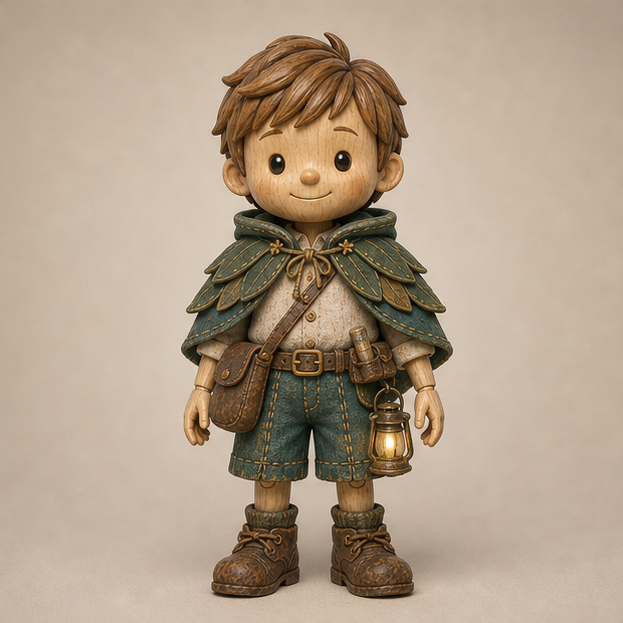

故事技能操作流程
把一个英语单词，变成一集结构统一、可交给后续制作的儿童动画脚本。

它负责的范围
脚本与制作说明
保持角色、世界观和模板一致；设计围绕单词的小故事；写出每个镜头的画面、台词、时长，以及可用于配音和文稿匹配的文本。
后续由制作工具完成
角色生图、12 宫格图片、视频生成、配音合成、剪辑和导出，需要另行执行。脚本中出现“输出12宫格”的指令，不代表此技能已经生成了图片。
~/.codex/skills/titi-story/SKILL.md。项目内 skills/titi-story/SKILL.md 是较早版本，章节顺序和片头规则有差异；本次仅梳理说明，没有修改任一 skill。实际操作：从选词到交付
选定本集唯一核心词操作建议
提供英文、中文含义和本集想发生的小故事。沿用你目前的选词偏好：常见、简单、看得见或摸得着，并能自然出现在冒险中，例如 bag、map、tree、leaf。
锁定角色与世界观技能规则
默认全程夜景、不戴帽版提提；浅木色木偶、棕色短发、米色衬衫、蓝绿色短裤与叶片披风、棕色侧包、愿望灯。环境为夜间微缩蘑菇森林，采用定格动画与微距质感。
愿望灯只回应善意、帮助他人，创造小而温暖的奇迹；它给提提行动的机会，不能替他解决一切。
先定故事骨架与教学句型整理后的操作顺序
围绕核心词安排：发现问题 → 产生善意 → 愿望灯回应 → 提提行动 → 温柔好笑的结尾。选择 1–2 个短句型，使孩子容易跟读。
写 8 秒教学片头与文字说明技能规则
先写固定概要，再按六个时间段写画面、动作、台词。中文先出现，英文随后在同一位置替换，并保留到黑屏。接着写四行文字表现建议。
写固定设定与 12 个正片镜头技能规则
先写主人公、场景、质感、风格、情节概要和角色，再拆成12镜。每镜都有标题、对应图号，以及“镜号 / 景别 / 画面 / 台词 / 时长”表格。
每镜约 5–8 秒；口播注明 0.8 倍语速；无台词时写音效。正片画面不出现文字，不使用背景音乐，只保留人声和特效音。
汇总中英文台词技能规则
中文台词放入“中文版”，英文台词放入“英文版”。最后将英文内容整理成一条连续文稿，放入“智能文稿匹配（英文）”。
核对模板、时长与画面限制技能规则 + 操作建议
按页面末尾清单验收。重点检查：只有一个核心词、正片恰好12镜、片头不露鞋、文字切换正确、结尾有轻松反转。
交给图像、视频和剪辑环节后续制作建议
确认脚本 → 准备角色图 → 生成并检查分镜图 → 逐镜制作视频 → 录制或合成配音与音效 → 拼接片头和正片 → 检查竖屏成片并导出。
8 秒片头：固定时间轴
| 时间 | 提提做什么 | 屏幕文字 |
|---|---|---|
| 0.0–1.0 秒 | “小朋友们，今天的单词是……” | 无文字，保留头顶区域 |
| 1.0–3.3 秒 | 说出中文词 | 仅中文，与发音同步出现 |
| 3.3–4.5 秒 | 说出英文词 | 中文消失，英文在原位出现 |
| 4.5–6.0 秒 | 说一个简短核心句型 | 英文保留，不增加句子字幕 |
| 6.0–6.8 秒 | 引入故事 | 英文继续保留 |
| 6.8–8.0 秒 | 画面渐黑，轻微转场音 | 英文与画面一起淡出；末尾约0.5秒全黑 |
片头构图的具体要求
- 9:16 竖屏、暖色暗森林；提提中近景面对观众。
- 词语直接悬在头顶，位于上方约8%–32%区域，占画面宽约58%–76%。
- 裁到短裤下缘或大腿上部，不露膝盖、小腿和鞋；各段不改变构图。
- 不加木牌、吊牌、底板、标签框；词语不放底部，不盖住身体。
- 中文和英文不能同时显示；只有片头允许教学词文字，正片不出现文字。
最终脚本必须按这个顺序排版
- 学习单词提示镜头分解
- 文字表现建议：中文词、英文大写、音标与发音、全黑尾帧四行
- 分隔线
- 开场指令：结合图1主体、正片无文字、12宫格、每格9:16
- 主人公（固定不变）
- 场景（固定不变）
- 质感表现（固定不变）
- 风格
- 情节概要
- 角色 (Characters)（固定不变）
- 分隔线
- 正片镜头分解 (Scene Breakdown)：12个镜头，每镜表格
- 台词总汇 (Dialogue Summary)
- 分隔线
- 中文版 (Chinese Version)
- 英文版 (English Version)
- 智能文稿匹配（英文）：连续英文文稿
发起一次任务
下面是一条可直接用于本技能的任务指令。80秒是本示例主动指定的时长口径。